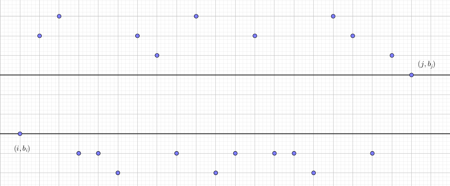
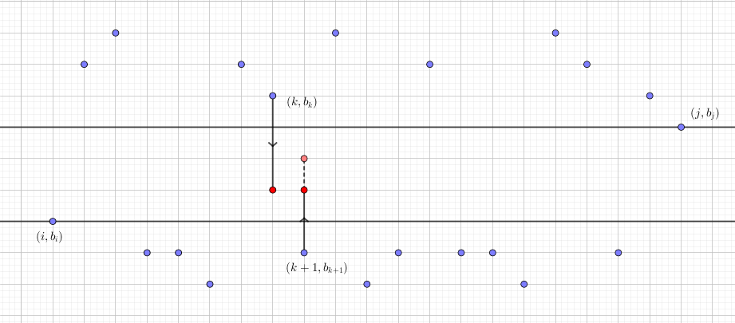

有一个长度为 $n$ 的整数序列 $A$，但是它太不好看了，于是我们希望把它变成一个单调严格上升的序列。但是不希望改变过多的数，也不希望改变的幅度太大。
第一行包含一个正整数 $n$ ($n \leq 35000$)。
第二行包含 $n$ 个整数，按顺序描述每一项的键值，保证所有数列是随机的。
第一行输出一个整数，表示最少需要改变多少个数。
第二行输出一个整数，表示在改变的数最少的情况下，每个数改变的绝对值之和的最小值。
由于最少改变多少个数不怎么直观，于是考虑它的反面——最多有多少个数不改变。
如果 $a_i$ 和 $a_j$ 都不改变 ($i < j$)，那么它们要满足什么要求呢？
假如说中间的都可以改变，那么由最终数列的严格递增特性，必须有 $a_i < a_{i+1} < \cdots < a_{j-1} < a_j$，由整数的离散型，就有 $a_i \leq a_{i+1} - 1 \leq a_{i+2} - 2 \leq \cdots \leq a_j - (j - i)$，化简后得到 $a_i - i \leq a_j - j$。
于是我们令 $b_i = a_i - i$，则这个条件就等价于 $b_i \leq b_j$，也就是说，不改变的数所对应的 $\{b_i\}$ 数列是单调递增的。
(注意：$\{b_i\}$ 单调递增不等价于 $\{a_i\}$ 严格递增，可以考虑这个例子：2 5 3 1 4，其中 $a_1 < a_3 < a_5$，而对应的 $\{b_i\}$ 为 1 3 0 -3 -1，不满足 $b_1 \leq b_3 \leq b_5$。)
于是我们只需要求出数列 $\{b_i\}$ 的最长 (非严格) 递增子序列，此即不改变的数的最大数量 $l$，那么改变的数的最小数量就等于 $n - l$。
然后是第二问，注意题目，是满足改变的数为 $n - l$ 的情况下，绝对值之和的最小值。
还是考虑 $\{b_i\}$ 数组，可以看出，它的实际意义就是改变一些数让 $\{b_i\}$ 单调 (非严格) 递增，并且有 $l$ 个数是不能动的，于是考虑以这 $l$ 个数作为状态进行 DP。
记 $g_i$ 为使前 $i$ 个数满足要求的最小花费，且 $b_i$ 是一个不动的数。则有初始状态 $g_0 = g_1 = 0$。考虑转移，枚举上一个不动的数 $j$，并记 $f_i$ 为前 $i$ 个数的 LIS 的长度，则有转移方程
$$ g_i = \min_{0 \leq j < i, b_j \leq b_i \\ f_i = f_j + 1} \left\{ g_j + w_{j, i} \right\} $$
其中 $w_{j, i}$ 表示 $b_j$ 和 $b_i$ 不动，适当调整 $\{b_i\}$ 下标在 $[j, i]$ 中的数，使其变为(非严格) 递增所需的最小花费。
如何求 $w_{j, i}$ 的事情我们先放一放，先考虑这样 DP 的结果。最终的答案就是 $g_n$ 吗？并不是。
由于 $g_n$ 的意义是使所有数满足要求，且 $b_n$ 不动的最小花费。然而 $b_n$ 不一定要不动啊！
举个例子，$\{b_i\}$ 为 3 2 2 1，最优方案显然是 $b_1$ 减 $1$，$b_4$ 加 $1$，花费为 $2$，如果 $b_4$ 不动，则花费至少是 $4$！可见答案并不是 $g_n$。
(scx: 那该怎么解决呢？)
其实并不难，我们只需令 $b_{n+1} = + \infty$，这样下来一定会有 $f_{n+1} = f_n + 1$，且 $b_{n+1}$ 一定是不动的 (否则花费就是无穷大了！)，因此，$g_{n+1}$ 就是正确的答案。
最后是如何求 $w_{i, j}$ 的问题。由于 $b_i, b_j$ 不动，故只能调整 $[i+1, j-1]$ 中的数使其递增。记最终调整后的序列为 $b_i, b'_{i+1}, b'_{i+2}, \cdots, b'_{j-1}, b_j$，最终的结论是：
$$ \exists k \in \left[ i, j \right), b_i = b'_{i+1} = b'_{i+2} = \cdots = b'_k, \ b'_{k+1} = b'_{k+2} = \cdots = b'_{j-1} = b_j $$
接下来试着证明一下 (跳过证明)。以下标为横坐标，$\{b_i\}$ 为纵坐标，将每个数看作二维平面上的一个点，如下图：
过 $(i, b_i)$ 和 $(j, b_j)$ 做垂直于 $y$ 轴的直线，很显然，这两条直线中间显然没有横坐标在区间 $\left( i, j \right)$ 中的点 (否则就不满足 $f_i = f_j + 1$ 了)。
接下来根据 $j - i$ 使用归纳法证明。显然 $j - i \leq 3$ 时结论成立。
假设当 $j - i < n$ 时成立，考虑 $j - i = n$ 时：
若存在 $k \in \left(i, j-1 \right)$ 使得 $b_k > b_j, b_{k+1} < b_i$，则有 $b'_k = b'_{k+1}$，否则我们可以强制令 $b'_{k+1} \gets b'_k$ 或 $b'_k \gets b'_{k+1}$，仍然满足题意，且花费变少，如下图：
则最终不论 $b'_k = b'_{k+1} = \alpha$ 的 $\alpha$ 是多少，这个绝对值和是固定的，于是可以将它们忽略，对剩下的 $n-3$ 个元素使用 ($n-2$ 的) 归纳假设即可。
若不存在 $k$ 满足上述条件，则必存在某个 $l$ 使得 $b_{i+1}, \cdots, b_l < b_i, b_{l+1}, \cdots, b_{j-1} > b_j$，则显然用最贪心地方法，让 $\left( i, l \right]$ 中的元素都跑到 $b_i$，其余元素跑到 $b_j$ 即可。
于是结论成立，我们可以直接枚举结论中的 $k$ 是哪个数，用前缀和或者直接调整计算即可。
总时间复杂度 $O(n^2)$，由于数据随机，$n = 35000$ 大概要跑 $150 \texttt{ ms}$ 左右。
#include <bits/stdc++.h>
#define N 35034
#define INF 0x3f3f3f3f
using namespace std;
typedef long long ll;
int n, i, j, k, cnt;
int a[N], D[N], prv[N];
int f[N], up[N], down[N];
ll g[N], r;
inline void downll(ll &x, const ll y) {x > y ? x = y : 0;}
inline bool cmp(const int x, const int y) {return a[x] < a[y];}
int main(){
scanf("%d", &n);
for(i = 1; i <= n; ++i){
scanf("%d", a + i);
a[i] -= i;
}
prv[0] = -1; a[0] = INT_MIN;
D[0] = f[0] = 0;
D[1] = f[1] = cnt = 1;
g[0] = g[1] = 0;
a[++n] = INF;
for(i = 2; i <= n; ++i){
j = upper_bound(D + 1, D + (cnt + 1), i, cmp) - D;
f[i] = j;
if(j > cnt) {prv[i] = -1; D[++cnt] = i;}
else {prv[i] = D[j]; D[j] = i;}
}
for(i = 2; i <= n; ++i){
g[i] = LLONG_MAX;
for(j = D[f[i] - 1]; j > i; j = prv[j]);
for(; ~j && a[j] <= a[i]; j = prv[j]){
r = g[j];
for(k = j + 1; k < i; ++k){
r += (up[k] = abs(a[k] - a[i]));
down[k] = abs(a[k] - a[j]);
}
downll(g[i], r);
for(k = j + 1; k < i; ++k)
downll(g[i], r += down[k] - up[k]);
}
}
printf("%d\n%lld\n", n - cnt, g[n]);
return 0;
}
坑1：DP 时要善于记录方案，如这道题中的 $g_i$：如果只记 $g_i$ 为前 $i$ 个数的最小花费，那就不好转移了。如果加上条件 且 $b_i$ 不动，那么就很好转移了。当然，也要理清楚最终的答案式怎么得到的，是不是 $g_n$ 就是答案，还是要进行什么操作。